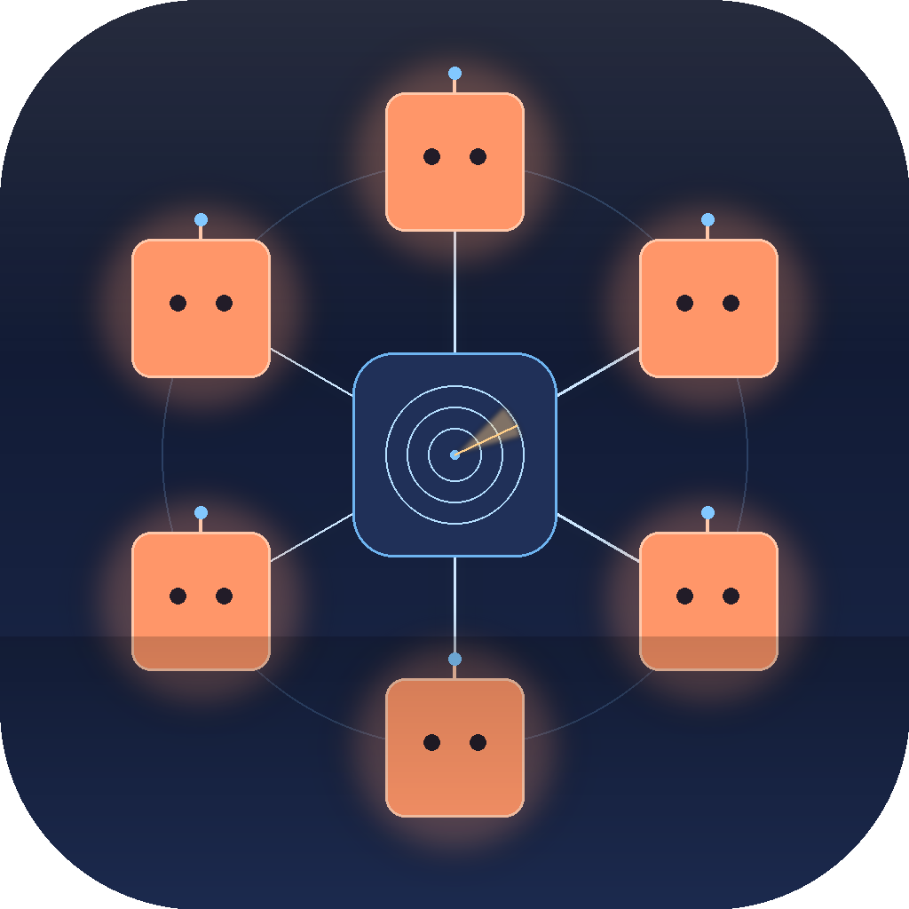

Run several Claude Code sessions in parallel and two things slip out of your hands: which session needs you, and how fast you're burning your token budget. Dispatch is built to hold both. Every live session becomes a numbered unit on one channel — approvals stack into a single menu, and you talk to any unit by voice instead of typing, the transcript landing straight in the right terminal. A passive meter keeps your 5-hour and weekly burn in front of you, so you see the cap coming instead of slamming into it mid-task.
Every parallel session on one channel, so you always know which one needs you — and can answer it by voice or a single click, without hunting for the terminal.
The friction in working with Claude Code is typing. Press the mic and just say what you want — Whisper transcribes locally and it lands in the session. Long instructions you'd never type out, quick mid-run corrections, hands-free while you do something else: speaking is lower friction than the keyboard, and it helps even with a single session. When several are running, your voice is addressed too — "Dispatch to unit three, run the tests, over" goes to UNIT-3, not whatever window has focus. Hands-free like Wispr Flow, but built in; and two-way — units answer back in distinct radio voices, so you can run the channel without looking at it.
Tool-call permissions from every live session funnel into one menu. One click Allow, one click Deny, ALLOW ALL when several stack up. No more alt-tabbing to find which terminal is asking.
A unified feed of what every unit is asking, what just completed, what you transmitted, what was approved. State of your work in one place instead of seven.
Reads your permissions.allow (user and project level) and respects each session's permissionMode, so it only prompts when Claude itself would have prompted.
Menu bar icon pulses red when something needs your input, green when a task is complete. Visible without audio. Notifications fire too.
A real Mac window (WKWebView) with cards for every unit — preview, allow/deny, mute, elevate, copy session id. Summon it from anywhere with ⌥⌘D, so it's reachable no matter which display you're on.
Every session burns your weekly cap, and Claude Code shows no meter — Anthropic exposes no quota API for Pro/Max. Dispatch keeps the burn in front of you.
Reads usage straight from Claude Code's own logs (deduped by message id — the raw logs over-count ~2.4×) and shows a glanceable 5h + 7d burn gauge. No alarms, no gating. The ceiling is an honest estimate — Anthropic publishes limits in hours, not tokens — labeled as such, and it self-corrects if you ever hit a real wall.
An earlier version warned in tiers and gated tool calls when you neared the cap — it fired a false alarm off a guessed ceiling, so it's gone. The meter shows you the number and stays out of your way. You decide what to do with it.
Native remote control lets you reach your sessions from anywhere. It doesn't make the switching go away, it just lets you carry it around. Dispatch is built on the opposite bet: collapse the sessions into one calm surface so you can stop tracking them in your head.
Every session on a single surface, not one terminal per agent.
Status lives in your menu bar and moves to the center of attention only when something needs you. You glance, you don't poll.
Permissions queue into one menu with Allow All, instead of each session interrupting you on its own.
Each session is a labeled, numbered unit, so you know what's asking without remembering which window it was.
The meter shows the number and stays quiet. No false urgency, no gating.
Voice is first-class, so instructing a session doesn't drag you back to the keyboard.
macOS 13+ on Apple Silicon. Python 3.13, ffmpeg, openai-whisper, and the Claude Code CLI on PATH.
brew install ffmpeg
pipx install openai-whispergit clone https://github.com/abhitsian/dispatch.git
cd dispatch
python3.13 -m venv .venv
.venv/bin/pip install -r requirements.txt
./make_app.sh
open /Applications/Dispatch.appThe installed app is a thin launcher that runs this clone — so updating is just git pull, no rebuild. Re-run ./make_app.sh only if the launcher or icon changes.
macOS will prompt on first use. Allow both — mic for voice transmit, Automation → Terminal/iTerm for typing into your terminals. (System Settings → Privacy & Security if the prompt disappears.)
Open the dispatch dashboard → ⚙ Settings → 🪝 Hook: not installed. Click to install. Start a new Claude Code session — its permission prompts now route through dispatch. Toggle off the same way any time.